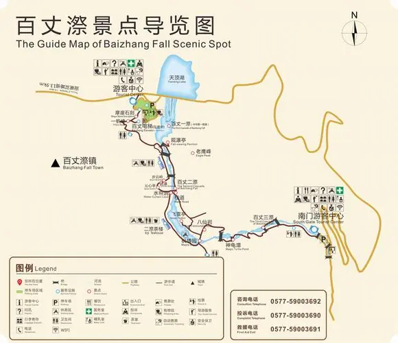

查看景区的详细导览图，帮助您更好地规划行程。

四季美景各有特色，选择最适合你的旅行季节
3月-5月
春季是百丈漈一年中最生机勃勃的季节，瀑布周围的植被开始复苏，各种野花竞相开放，形成一片五彩斑斓的花海。此时的瀑布水量适中，清澈见底，是拍照的好时机。
6月-8月
夏季是百丈漈的丰水期，瀑布水量大，气势磅礴，是感受瀑布壮观的最佳时机。同时，景区内绿树成荫，气温比市区低3-5℃，是避暑的好去处。
9月-11月
秋季是百丈漈最美的季节之一，山上的树叶变成了金黄色、红色，与瀑布的白色水流形成鲜明对比，构成一幅美丽的画卷。此时天气晴朗，空气清新，是徒步和摄影的好时机。
12月-2月
冬季的百丈漈别有一番风味，瀑布周围的树木被雪覆盖，形成一片银白世界。此时游客较少，景区更加宁静，你可以在这里享受一份难得的宁静与悠闲。
根据您的时间，选择最适合的行程安排
从景区入口出发，乘坐景区观光车直达百丈一漈。欣赏中国第一高瀑的壮观景象，感受瀑布的磅礴气势。之后沿着步道下行，前往百丈二漈，体验"人在瀑中走"的奇妙感受。
在景区内的餐厅品尝当地特色美食，如文成拉面、糯米山药等，为下午的行程补充能量。
从百丈二漈继续下行，前往百丈三漈。三漈犹如一条银链横挂在山间，景色秀丽。之后沿着峡谷步道漫步，欣赏两侧的奇峰怪石和茂密森林。
结束一天的行程，可选择返回市区或住在景区附近的民宿，体验乡村生活。
与一日游行程相同，深入体验中国第一高瀑的壮观和"人在瀑中走"的奇妙感受。
在景区内的餐厅品尝当地特色美食。
继续游览百丈三漈和峡谷步道，感受大自然的鬼斧神工。
入住景区附近的特色民宿，品尝农家晚餐，参加篝火晚会，体验乡村生活。
前往刘伯温的故乡，参观刘基庙和刘基故居，了解这位明朝开国元勋的生平事迹和文化遗产。
前往文成县城，品尝更多当地特色美食，如伯温家宴、文成狗肉等。
前往铜铃山国家森林公园，欣赏独特的壶穴奇观和原始森林风光，体验"森林氧吧"的清新
结束两天的行程，带着美好的回忆返回。
参加专业向导带领的峡谷探险活动，探索未开发的峡谷区域，体验刺激的溯溪和攀岩。
在当地农家享用正宗的农家菜，品尝山间野菜和土家特色美食。
参观当地茶园，了解茶叶的种植和制作过程，参与采茶和制茶活动，品尝新鲜的山茶。
结束三天的行程，带着满满的回忆返回。
帮助您更好地规划和享受百丈漈之旅的实用信息
看看其他游客对百丈漈的真实评价
"百丈漈的瀑布真的非常壮观，尤其是一漈，落差很大，水流湍急，气势磅礴。二漈可以走到瀑布后面，非常特别。景区设施也很完善，是一次非常棒的旅行体验。"
2025年5月15日
"秋季去的百丈漈，山上的红叶非常漂亮，和瀑布相映成趣。景区内的步道很干净，指示牌也很清晰。唯一的缺点是节假日人有点多，建议错峰出行。"
2025年10月22日
"带家人一起去的，老人和孩子都很喜欢。瀑布很壮观，空气也很清新。景区内的观光车很方便，减少了步行的疲劳。唯一遗憾的是时间有点紧，没有玩遍所有景点，下次还会再来。"
2025年4月5日